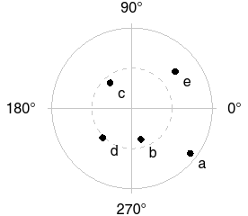
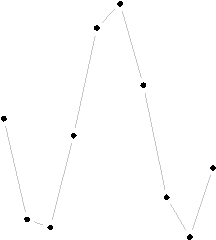
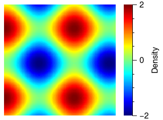
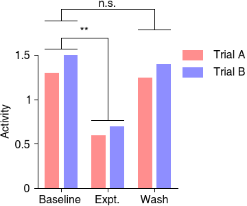
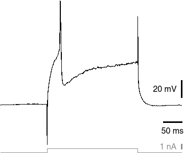

About QPlot
QPlot is an alternative 2D plotting library for Matlab and Octave that facilitates beautiful typography and precise axis scaling. QPlot is described in an article, “Publication Quality 2D Graphs with Less Manual Effort due to Explicit Use of Dual Coordinate Systems,” currently in review. If you are interested in a copy of the manuscript, please contact the author.Some examples
(Click on the examples to view as pdf.)| 
View code |

View code |

View code |
| 
View code |

View code |